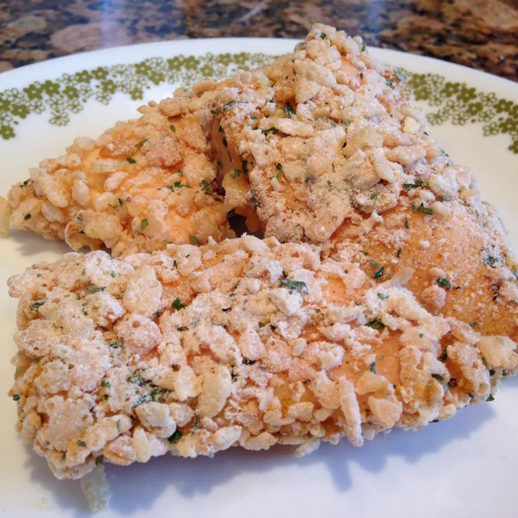

Chicken Strips!

Description
For all my chicken strip lovers, whether they be young kids looking for a quick snack or young adults who simply cannot let go of their love for chicken strips.
Putting together this recipe will be easy if you follow the steps below !
Ingredients
- ¼ cup butter, melted
- 1 ½ cups crispy rice cereal, coarsely crushed
- 2 tablespoons all-purpose flour
- 2 teaspoons salt-free seasoning blend
- 1 pound boneless, skinless chicken breast tenders
Steps
- Preheat oven to 400 degrees F (200 degrees C). Lightly grease a 9x13 inch baking dish.
- Place butter in a shallow bowl. In a separate shallow bowl, mix the crushed cereal, flour, and seasoning blend.
- Dip chicken tenders in the butter, then press in the cereal mixture to evenly coat. Arrange in the prepared baking dish. Drizzle with any remaining butter.
- Bake 25 minutes in the preheated oven, or until chicken juices run clear.